Guide Manusoft Light V3
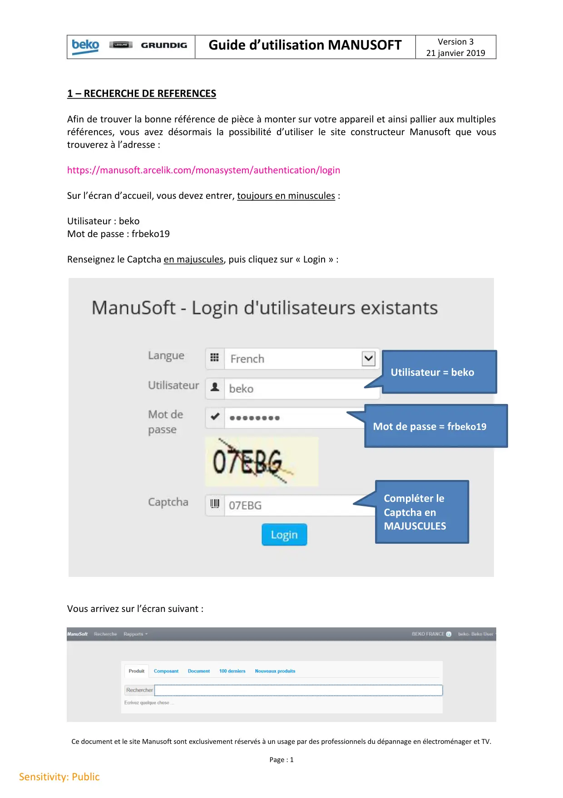
Guide d’utilisation MANUSOFTVersion 321 janvier 2019Ce document et le site Manusoft sont exclusivement réservés à un usage par des professionnels du dépannage en électroménager et TV.Page : 1Sensitivity: Public1 – RECHERCHE DE REFERENCESAfin de trouver la bonne référence de pièce à monter sur votre appareil et ainsi pallier aux multiplesréférences, vous avez désormais la possibilité d’utiliser le site constructeur Manusoft que voustrouverez à l’adresse :https://manusoft.arcelik.com/monasystem/authentication/loginSur l’écran d’accueil, vous devez entrer, toujours en minuscules :Utilisateur : bekoMot de passe : frbeko19Renseignez le Captcha en majuscules, puis cliquez sur « Login » :Vous arrivez sur l’écran suivant :Utilisateur = bekoMot de passe = frbeko19Compléter leCaptcha enMAJUSCULES
1 / 12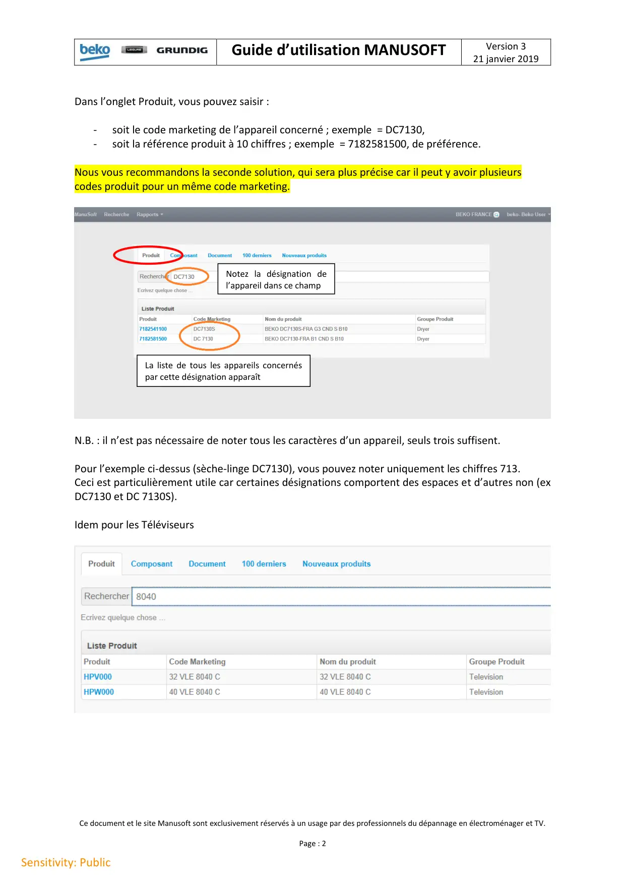
Guide d’utilisation MANUSOFTVersion 321 janvier 2019Ce document et le site Manusoft sont exclusivement réservés à un usage par des professionnels du dépannage en électroménager et TV.Page : 2Sensitivity: PublicDans l’onglet Produit, vous pouvez saisir :-soit le code marketing de l’appareil concerné ; exemple = DC7130,-soit la référence produit à 10 chiffres ; exemple = 7182581500, de préférence.Nous vous recommandons la seconde solution, qui sera plus précise car il peut y avoir plusieurscodes produit pour un même code marketing.N.B. : il n’est pas nécessaire de noter tous les caractères d’un appareil, seuls trois suffisent.Pour l’exemple ci-dessus (sèche-linge DC7130), vous pouvez noter uniquement les chiffres 713.Ceci est particulièrement utile car certaines désignations comportent des espaces et d’autres non (exDC7130 et DC 7130S).Idem pour les TéléviseursNotez la désignation del’appareil dans ce champLa liste de tous les appareils concernéspar cette désignation apparaît
2 / 12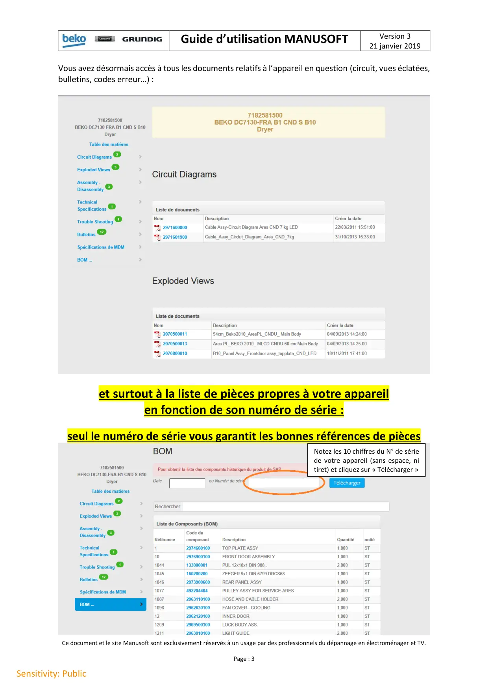
Guide d’utilisation MANUSOFTVersion 321 janvier 2019Ce document et le site Manusoft sont exclusivement réservés à un usage par des professionnels du dépannage en électroménager et TV.Page : 3Sensitivity: PublicVous avez désormais accès à tous les documents relatifs à l’appareil en question (circuit, vues éclatées,bulletins, codes erreur…) :et surtout à la liste de pièces propres à votre appareilen fonction de son numéro de série :seul le numéro de série vous garantit les bonnes références de piècesNotez les 10 chiffres du N° de sériede votre appareil (sans espace, nitiret) et cliquez sur « Télécharger »
3 / 12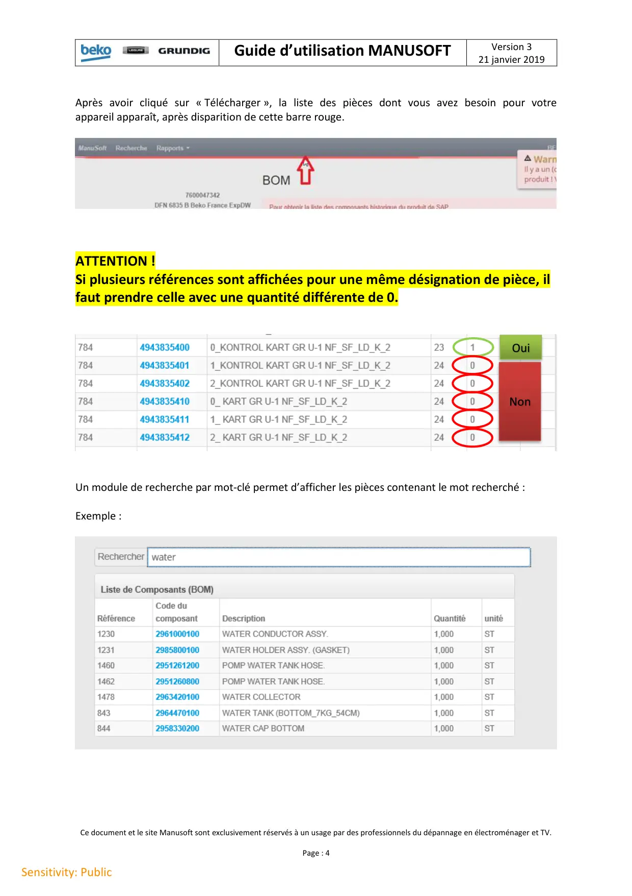
Guide d’utilisation MANUSOFTVersion 321 janvier 2019Ce document et le site Manusoft sont exclusivement réservés à un usage par des professionnels du dépannage en électroménager et TV.Page : 4Sensitivity: PublicAprès avoir cliqué sur « Télécharger », la liste des pièces dont vous avez besoin pour votreappareil apparaît, après disparition de cette barre rouge.ATTENTION !Si plusieurs références sont affichées pour une même désignation de pièce, ilfaut prendre celle avec une quantité différente de 0.Un module de recherche par mot-clé permet d’afficher les pièces contenant le mot recherché :Exemple :OuiNon
4 / 12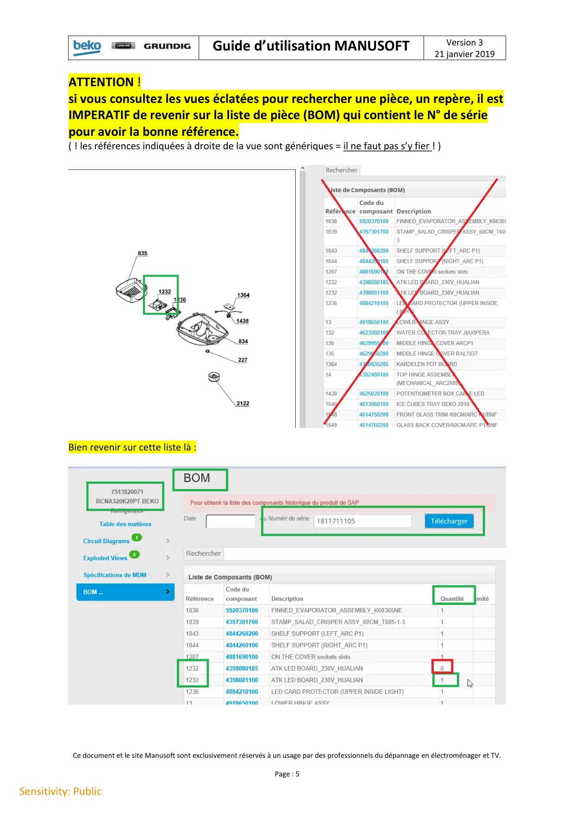
Guide d’utilisation MANUSOFTVersion 321 janvier 2019Ce document et le site Manusoft sont exclusivement réservés à un usage par des professionnels du dépannage en électroménager et TV.Page : 5Sensitivity: PublicATTENTION !si vous consultez les vues éclatées pour rechercher une pièce, un repère, il estIMPERATIF de revenir sur la liste de pièce (BOM) qui contient le N° de sériepour avoir la bonne référence.( ! les références indiquées à droite de la vue sont génériques = il ne faut pas s’y fier ! )Bien revenir sur cette liste là :
5 / 12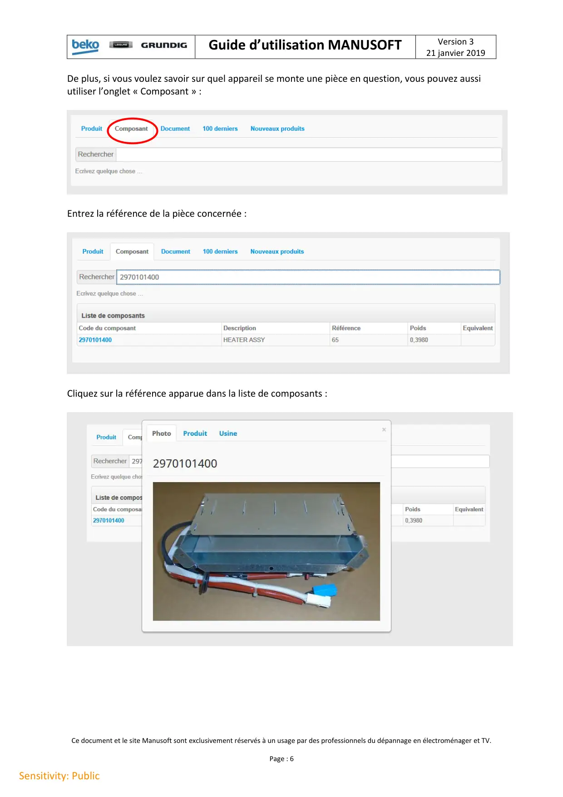
Guide d’utilisation MANUSOFTVersion 321 janvier 2019Ce document et le site Manusoft sont exclusivement réservés à un usage par des professionnels du dépannage en électroménager et TV.Page : 6Sensitivity: PublicDe plus, si vous voulez savoir sur quel appareil se monte une pièce en question, vous pouvez aussiutiliser l’onglet « Composant » :Entrez la référence de la pièce concernée :Cliquez sur la référence apparue dans la liste de composants :
6 / 12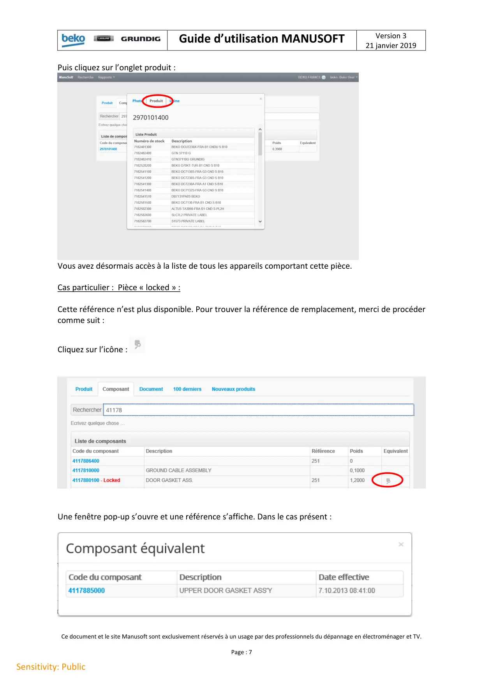
Guide d’utilisation MANUSOFTVersion 321 janvier 2019Ce document et le site Manusoft sont exclusivement réservés à un usage par des professionnels du dépannage en électroménager et TV.Page : 7Sensitivity: PublicPuis cliquez sur l’onglet produit :Vous avez désormais accès à la liste de tous les appareils comportant cette pièce.Cas particulier : Pièce « locked » :Cette référence n’est plus disponible. Pour trouver la référence de remplacement, merci de procédercomme suit :Cliquez sur l’icône :Une fenêtre pop-up s’ouvre et une référence s’affiche. Dans le cas présent :
7 / 12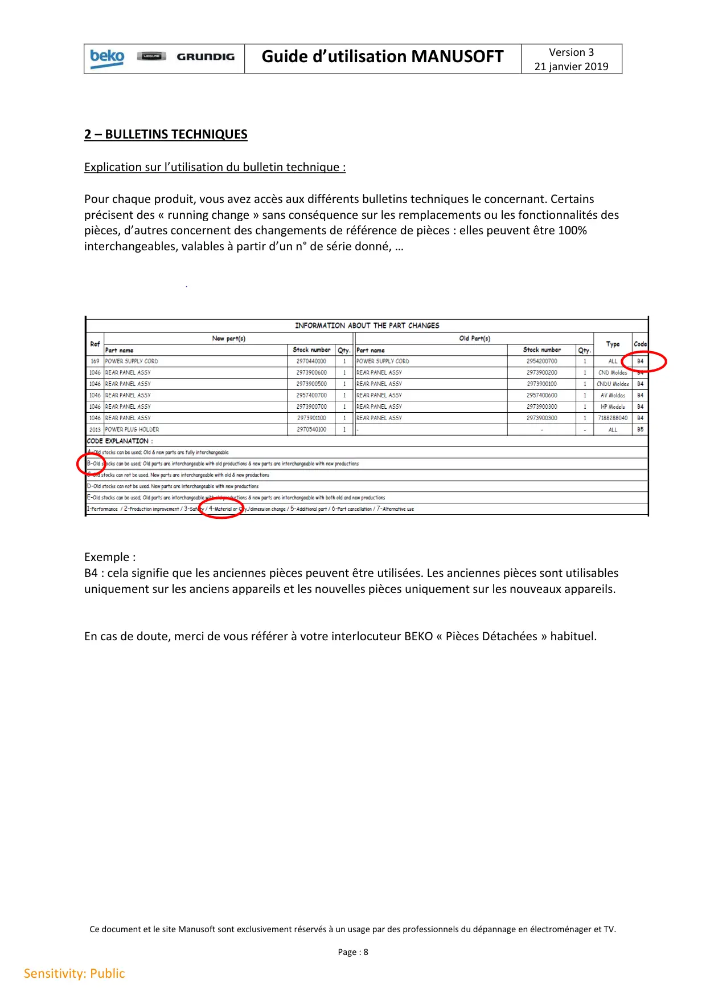
Guide d’utilisation MANUSOFTVersion 321 janvier 2019Ce document et le site Manusoft sont exclusivement réservés à un usage par des professionnels du dépannage en électroménager et TV.Page : 8Sensitivity: Public2 – BULLETINS TECHNIQUESExplication sur l’utilisation du bulletin technique :Pour chaque produit, vous avez accès aux différents bulletins techniques le concernant. Certainsprécisent des « running change » sans conséquence sur les remplacements ou les fonctionnalités despièces, d’autres concernent des changements de référence de pièces : elles peuvent être 100%interchangeables, valables à partir d’un n° de série donné, …Exemple :B4 : cela signifie que les anciennes pièces peuvent être utilisées. Les anciennes pièces sont utilisablesuniquement sur les anciens appareils et les nouvelles pièces uniquement sur les nouveaux appareils.En cas de doute, merci de vous référer à votre interlocuteur BEKO « Pièces Détachées » habituel.
8 / 12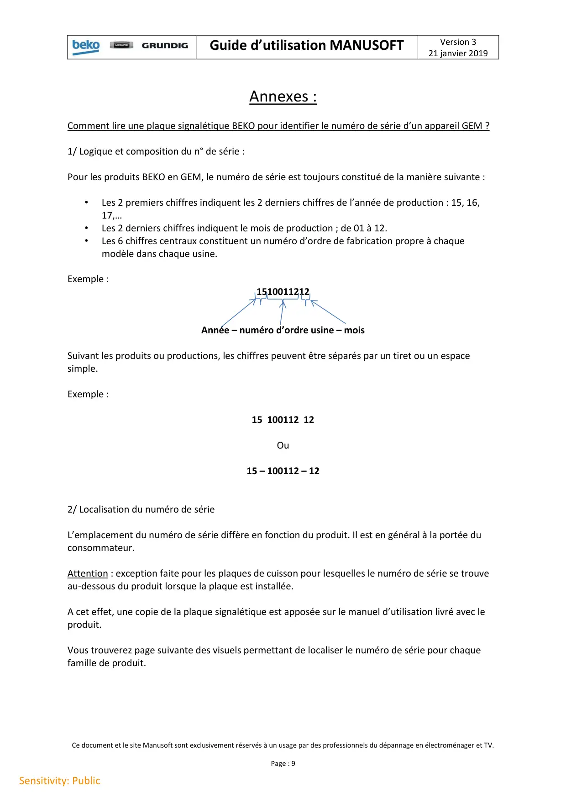
Guide d’utilisation MANUSOFTVersion 321 janvier 2019Ce document et le site Manusoft sont exclusivement réservés à un usage par des professionnels du dépannage en électroménager et TV.Page : 9Sensitivity: PublicAnnexes :Comment lire une plaque signalétique BEKO pour identifier le numéro de série d’un appareil GEM ?1/ Logique et composition du n° de série :Pour les produits BEKO en GEM, le numéro de série est toujours constitué de la manière suivante :•Les 2 premiers chiffres indiquent les 2 derniers chiffres de l’année de production : 15, 16,17,…•Les 2 derniers chiffres indiquent le mois de production ; de 01 à 12.•Les 6 chiffres centraux constituent un numéro d’ordre de fabrication propre à chaquemodèle dans chaque usine.Exemple :1510011212Année – numéro d’ordre usine – moisSuivant les produits ou productions, les chiffres peuvent être séparés par un tiret ou un espacesimple.Exemple :15 100112 12Ou15 – 100112 – 122/ Localisation du numéro de sérieL’emplacement du numéro de série diffère en fonction du produit. Il est en général à la portée duconsommateur.Attention : exception faite pour les plaques de cuisson pour lesquelles le numéro de série se trouveau-dessous du produit lorsque la plaque est installée.A cet effet, une copie de la plaque signalétique est apposée sur le manuel d’utilisation livré avec leproduit.Vous trouverez page suivante des visuels permettant de localiser le numéro de série pour chaquefamille de produit.
9 / 12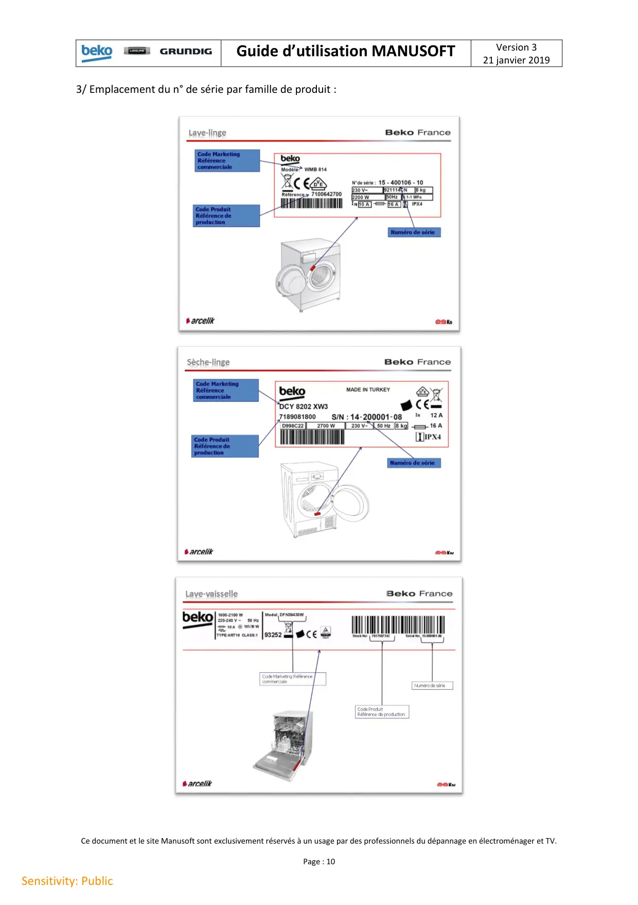
Guide d’utilisation MANUSOFTVersion 321 janvier 2019Ce document et le site Manusoft sont exclusivement réservés à un usage par des professionnels du dépannage en électroménager et TV.Page : 10Sensitivity: Public3/ Emplacement du n° de série par famille de produit :
10 / 12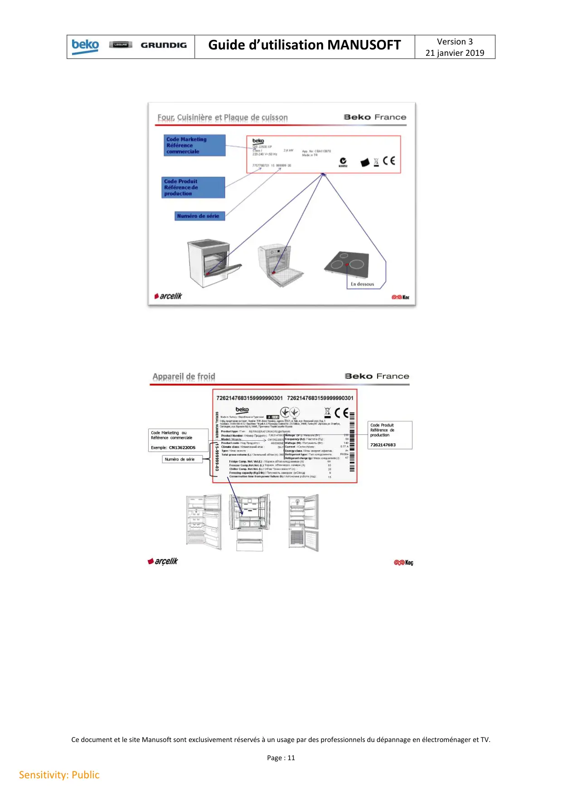
Guide d’utilisation MANUSOFTVersion 321 janvier 2019Ce document et le site Manusoft sont exclusivement réservés à un usage par des professionnels du dépannage en électroménager et TV.Page : 11Sensitivity: Public
11 / 12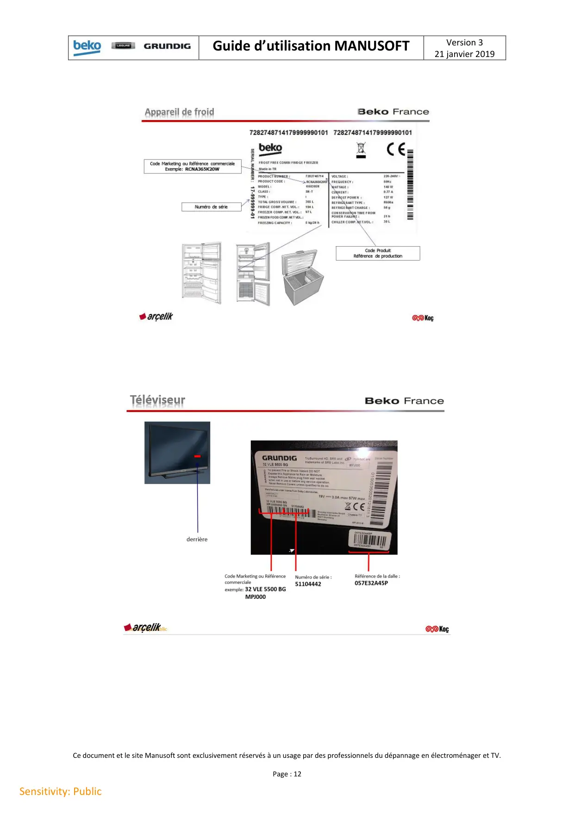
Guide d’utilisation MANUSOFTVersion 321 janvier 2019Ce document et le site Manusoft sont exclusivement réservés à un usage par des professionnels du dépannage en électroménager et TV.Page : 12Sensitivity: Public
12 / 12